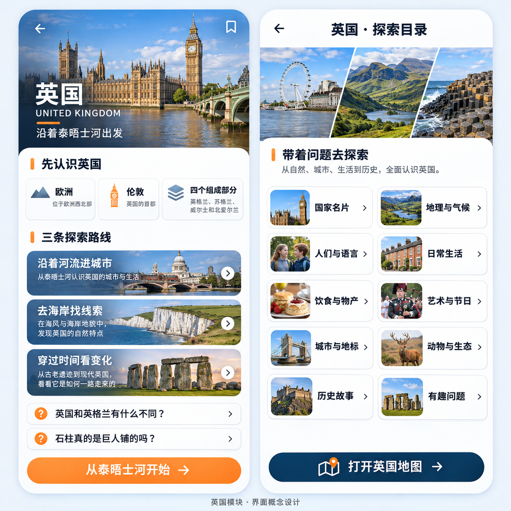
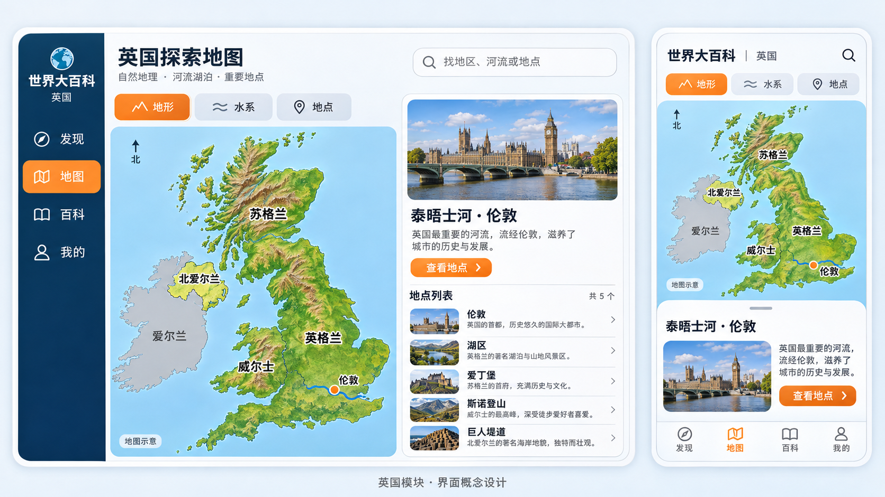
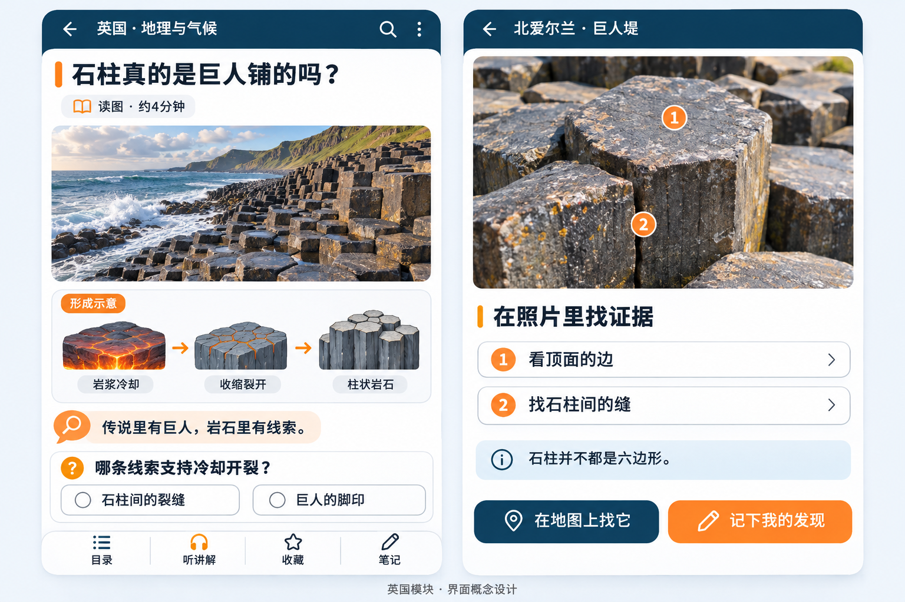
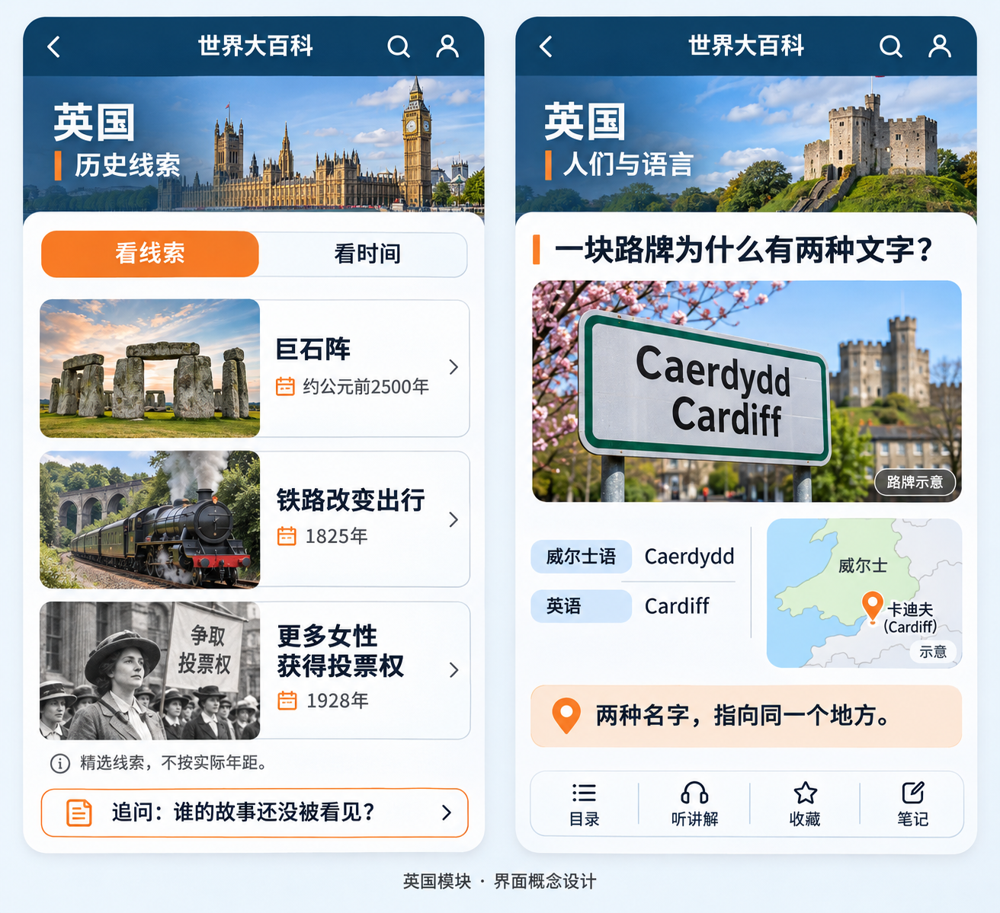
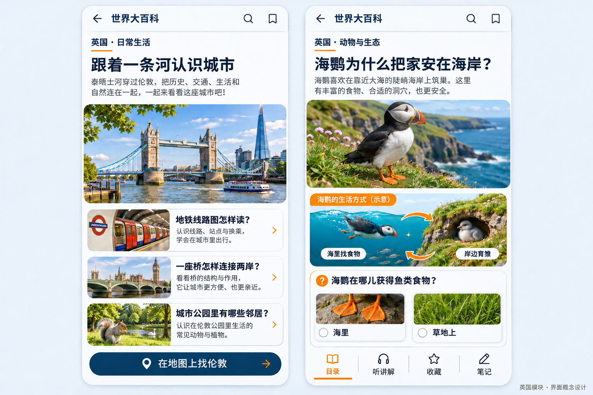
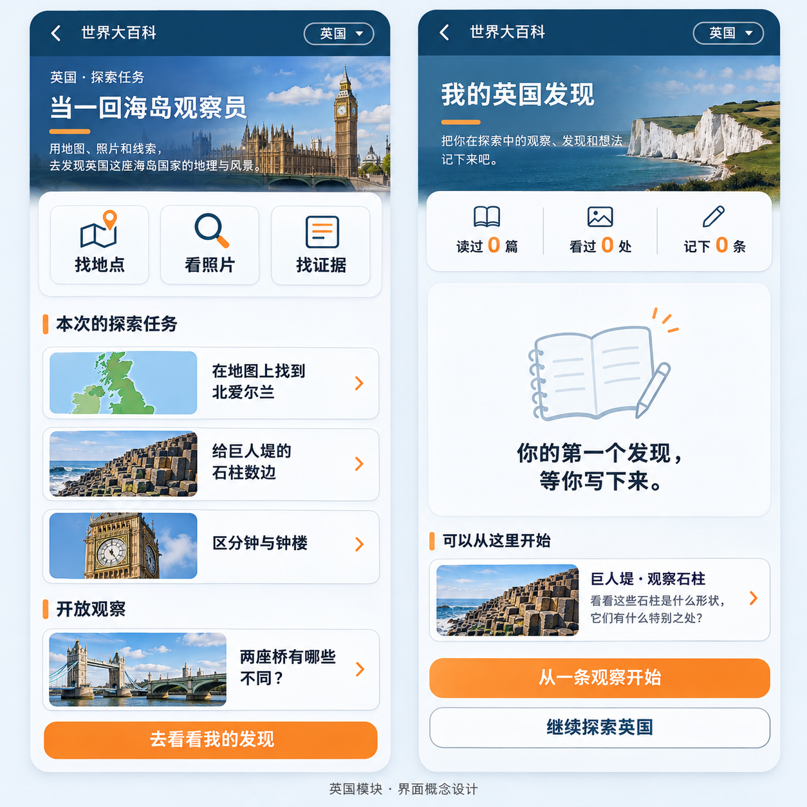
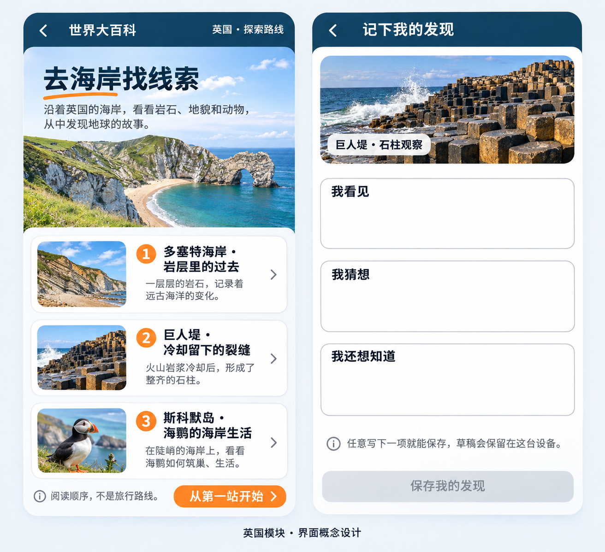

从城市河岸走向山谷和海岸。十栏目、30篇内容规划、12处地点、三条路线；七组原稿覆盖十四个代表页面与状态。
这些图片用于界面设计评审。风景、历史影像与地图为生成示意；正式实现使用经核验的照片、档案和GIS。文案及状态规则以交接文档为准。
GB01 / GB02 · 点击原图放大

GB03 / GB04 · 点击原图放大

GB05 / GB06 · 点击原图放大

GB07 / GB08 · 点击原图放大

GB09 / GB10 · 点击原图放大

GB11 / GB12 · 点击原图放大

GB13 / GB14 · 点击原图放大
